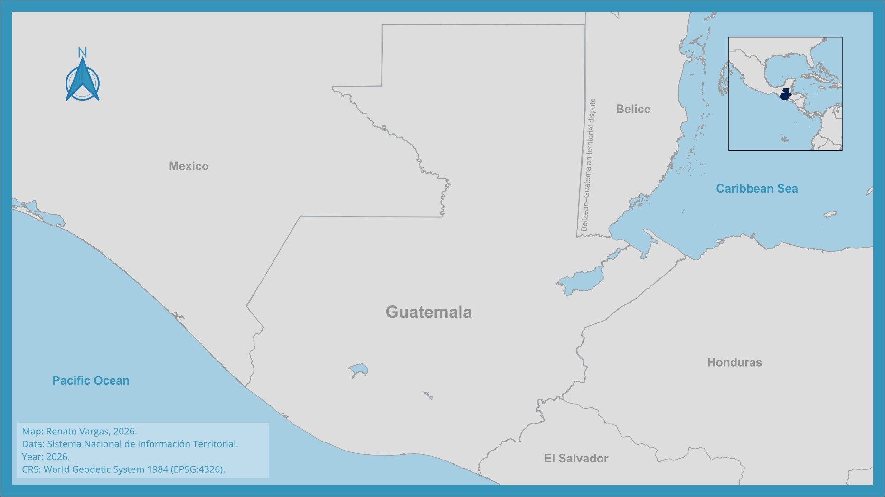
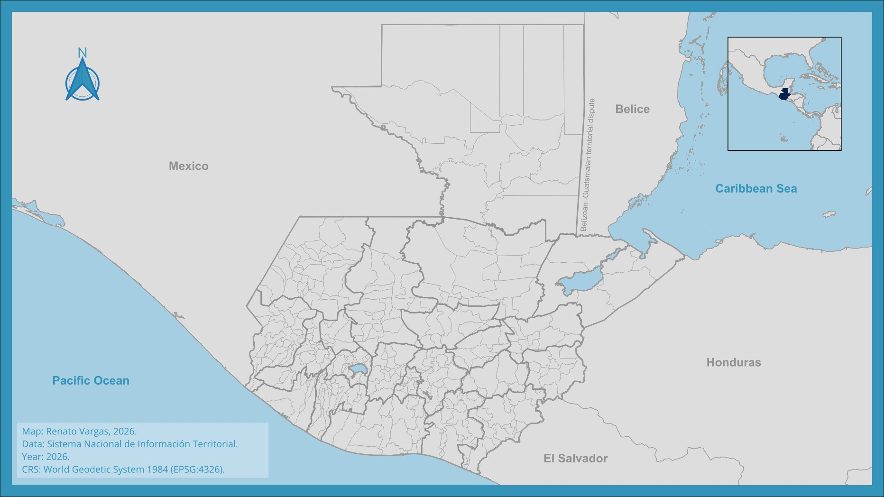
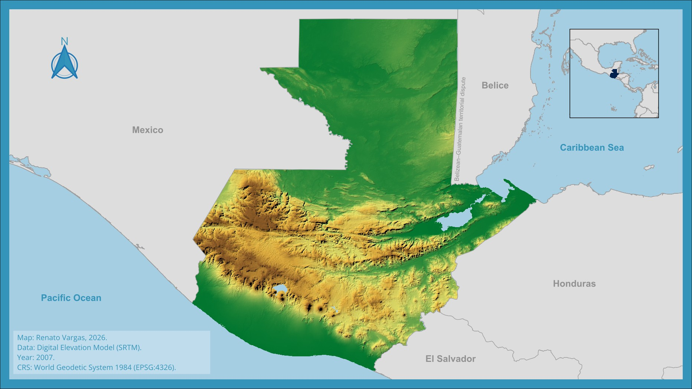
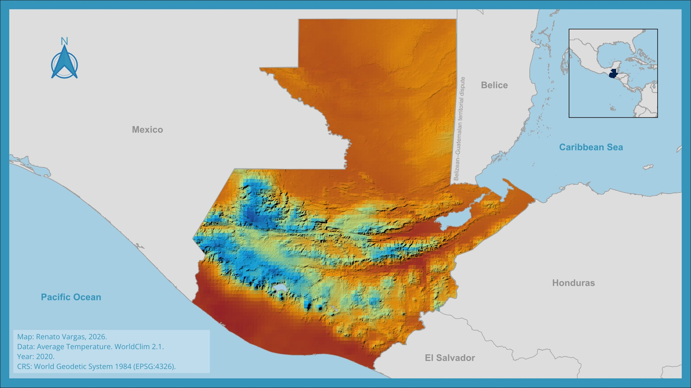
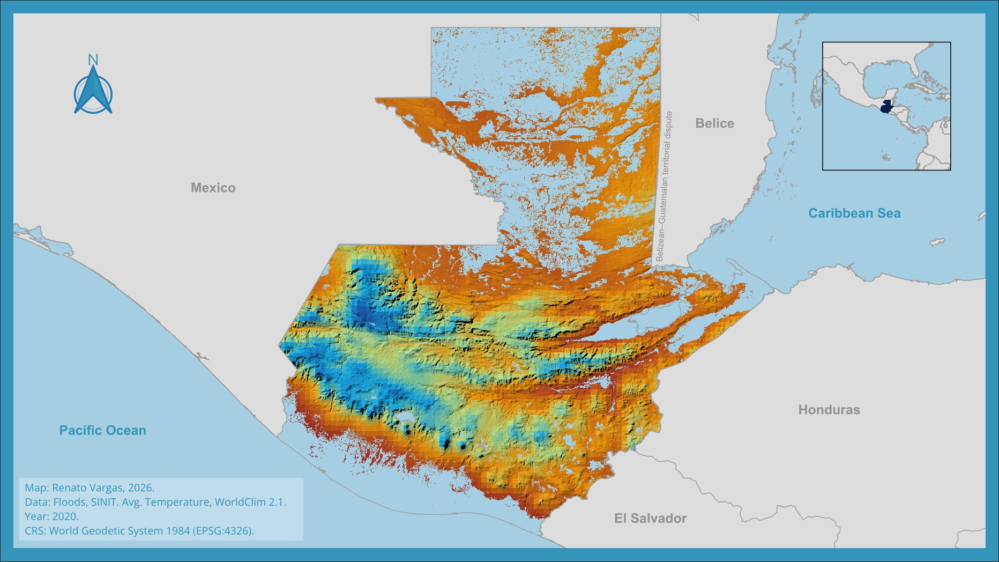

The geographic nature of climate impacts
The case of Guatemala
One of the most important challenges in financial risk analysis related to climate change is the fact that these risks behave very differently from location to location. While some regions may expect increasing levels of drought, for example, adjacent regions may experience increased torrential rains simply because they are on the other side of a mountain range. Since the geographic aspect of climate variables and natural resources is important, it is also crucial to know the level of economic activity with the highest possible geographic disaggregation. However, detailed information on economic activity is only available at the national level in Guatemala. So we set out to disaggregate that information and contrast it against the different types of climactic risk for which there’s information available.
This is Guatemala.
It borders Mexico, Belice, Honduras, and El Salvador.
It is divided into 22 departments.
…and 340 municipalities within those.
It is fairly mountainous…
…and it is expected to face increases in temperature of between 1.5°C, in the most optimistic scenario, to between 4°C and 5°C in the least optimistic scenario by the end of the century.
Most scenarios expect a decrease in annual precipitation of about 25% by the end of the century, especially in Guatemala’s semi-arid zone to the East and the central plateau.
Although longer droughts are expected, the rainy season may be disrupted, causing severe local storms and floods; especially in low-lying areas.
That is why it is important to understand the possible economic risks associated with these changes.






One of the most important challenges in financial risk analysis related to climate change is the fact that these risks behave very differently from location to location.
While some regions may expect increasing levels of drought, for example, adjacent regions may experience increased torrential rains simply because they are on the other side of a mountain range. Since the geographic aspect of climate variables and natural resources is important, it is also crucial to know the level of economic activity with the highest possible geographic disaggregation.
However, detailed information on economic activity is only available at the national level in Guatemala. So we set out to disaggregate that information and contrast it against the different types of climactic risk for which there’s information available.